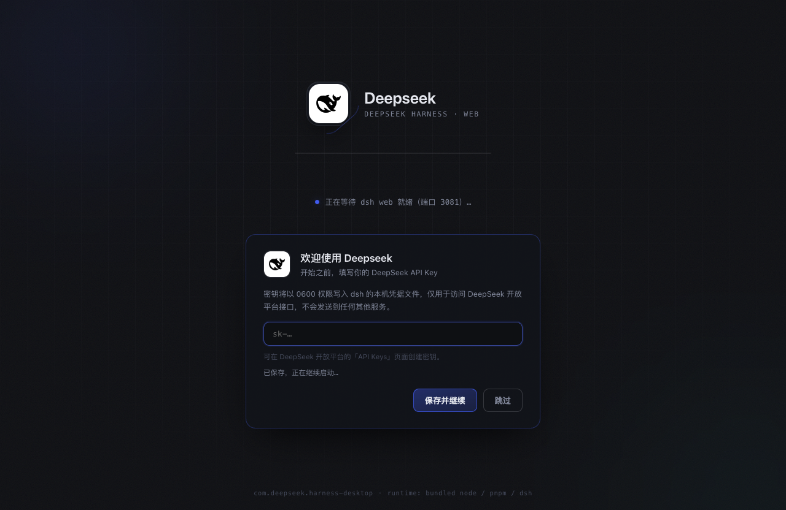
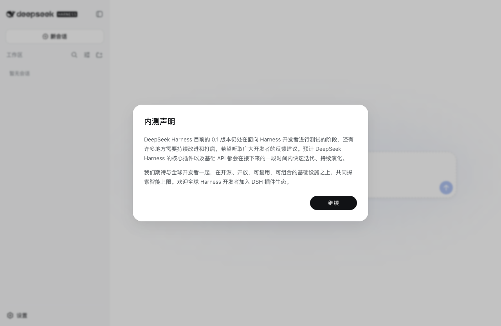
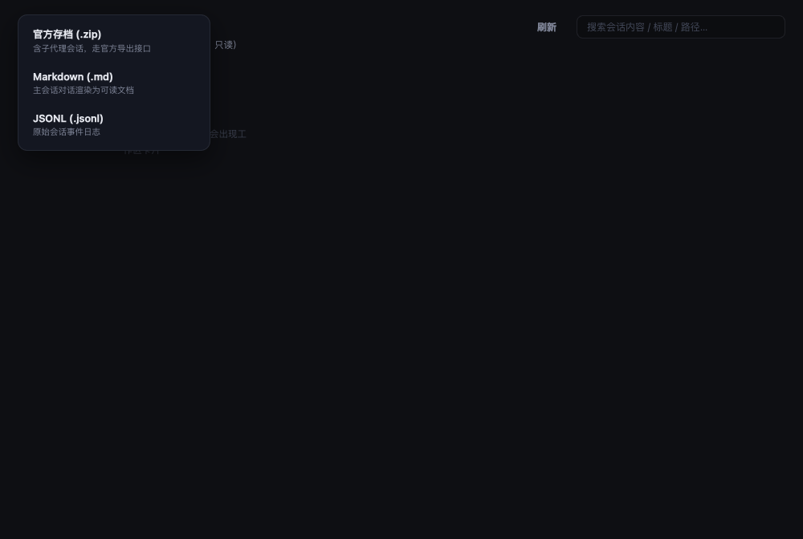

零依赖内嵌运行时
RUNTIME
Node、pnpm、dsh 全部内置并随包分发。不碰系统环境，不装全局包——删掉 App 即彻底卸载。
Deepseek 将官方 DeepSeek Harness 的本地 Web UI 打包为桌面应用：内嵌 Node / pnpm / dsh 运行时，零环境依赖。会话管理中心、插件市场 2.0、托盘常驻与原生通知——所有能力由插件组合而成， 我们只负责把它们放进一个更顺手的壳里。
WHY DESKTOP
不动官方 web 一行代码：运行时、会话与插件数据全部复用官方体系，桌面壳只做体验层。
RUNTIME
Node、pnpm、dsh 全部内置并随包分发。不碰系统环境，不装全局包——删掉 App 即彻底卸载。
OFFICIAL
运行时来自 npm 官方分发并做来源校验，每 6 小时自动检查新版、人工验证后合并，不做静默升级。
SESSIONS
Trae 风格项目卡片首页；跨工作区浏览、搜索、恢复与导出（官方 zip / Markdown / JSONL）。只读接入，数据安全。
MARKETPLACE
精选目录 + dshfind 1200+ 在线市场，搜索即装；兼容徽章、健康检查、一键全量更新、GitHub 源码直装。
TRAY
关窗驻留托盘，出错、更新、插件操作以系统通知送达，点击即聚焦对应窗口。
DIAGNOSTICS
进程起不来、端口被占、运行时缺件——诊断面板给出原因与修复动作，双轨更新失败自动回退。
INSTALL
文件名中的 arm64 / x64 请按你的 CPU 选择。
# 1. 下载 dmg，双击打开，把 Deepseek 拖入 Applications
# 2. 应用未签名：首次打开请「右键 → 打开」确认，
# 或到 系统设置 → 隐私与安全性 → 仍要打开
# 3.（可选）校验安装包完整性
# 与 Release 附件 SHASUMS256.txt 逐行比对
$ shasum -a 256 deepseek-harness-desktop-mac-arm64.dmgApple Silicon 选 *-mac-arm64.dmg，Intel Mac 选 *-mac-x64.dmg。
# Debian / Ubuntu（推荐，自动处理桌面项与依赖）
$ sudo apt install ./deepseek-harness-desktop-linux-amd64.deb
# 任意发行版：AppImage
$ chmod +x deepseek-harness-desktop-linux-x86_64.AppImage
$ ./deepseek-harness-desktop-linux-x86_64.AppImage
# AppImage 需要 FUSE（缺失时）：Ubuntu 22.04+
$ sudo apt install libfuse2ARM 设备（如树莓派 / ARM 服务器）请选 *-linux-arm64.* 产物。
PREVIEW
启动引导 → 官方 Web 界面 → 会话中心，全部能力由官方插件体系承载。



MARKETPLACE
应用内搜索即装；以下为精选目录预览，兼容性以应用内实际展示为准。
VSCode 式右侧工作台：文件浏览/编辑、终端、Git、浏览器等可扩展 Tab。
★ 727 · npmdsh-web-ui 全家桶聚合包：任务看板 / Git 图谱 / 右侧面板 / 皮肤中心一键装齐。
★ 1845 · npm工具搜索与按需加载：渐进式 schema 披露，精简上下文。
npm · 已验证面向模型的结构化安全 Git 工具族（status/diff/log/branch 等）。
npm · 已验证Mnemon 本地记忆系统：运行时记忆、可检索档案与记忆体。
npm · 已验证选中批注：选文字→批注→回车随消息发送，回复按编号逐条对照。
源码 · 已 pin 提交分层长期记忆（全局/用户/项目/Git 分支/每日）+ 自我进化与技能管理。
源码 · 已 pin 提交为纯文本智能体赋予视觉能力：问答、定位、裁剪、OCR、截图。
npm · 已验证插件条目为静态预览，版本兼容性以应用内插件市场实际展示为准；dshfind 在线市场已接入应用，搜索即装。
FAQ
应用当前未做签名与公证，这是正常现象。两种放行方式任选其一：
全部位于用户目录下的 ~/.dsh，与 App 安装位置分离：升级、重装甚至卸载应用都不会动它；不再需要时手动删除该目录即可彻底清理。
不会。会话中心对 ~/.dsh 与官方接口全程只读：浏览、搜索、导出都只是读取；「恢复」即打开官方 Web 界面续接，会话选择仍由官方 UI 负责。
仓库每 6 小时自动检查 npm 上 @deepseek-ai/dsh 的新版本，检测到更新会自动提交一个同步 PR，人工验证后才会合并发版——不做任何静默升级。